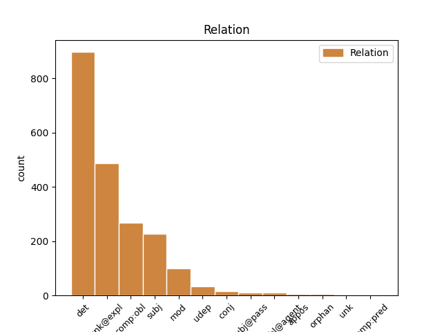
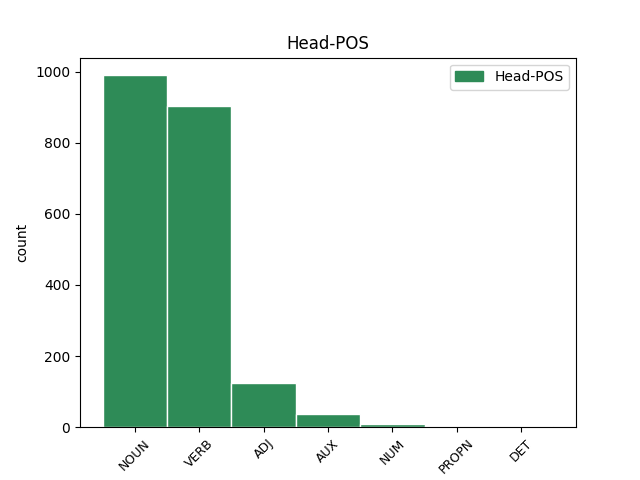
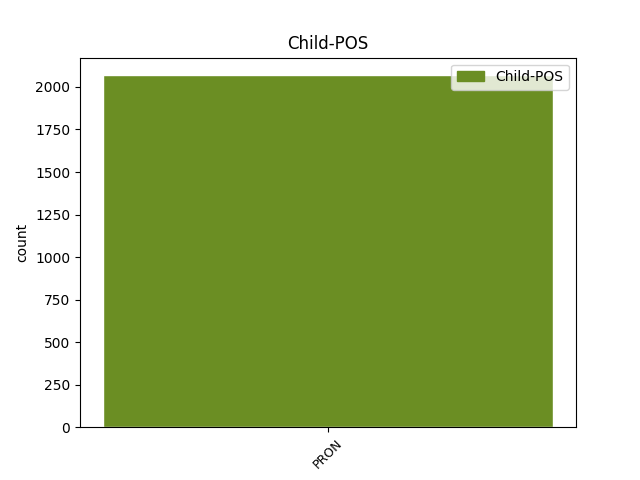

Distribution of features within this leaf



Agreement Rules sorted by frequency.
- When the dependent token is the determiner(det) of the head token, and the head token is NOUN and the dependent token is PRON.
1 ты _ _ _ _ 0 _ _ _
2 же _ _ _ _ 0 _ _ _
3 ꙗко _ _ _ _ 0 _ _ _
4 неистове _ _ _ _ 0 _ _ _
5 юже иже PRON Pr Case=Acc|Gender=Fem|Number=Sing|PronType=Rel 8 det _ ref=316v10
6 на _ _ _ _ 0 _ _ _
7 тебѣ _ _ _ _ 0 _ _ _
8 млсть милость NOUN Nb Case=Acc|Gender=Fem|Number=Sing 0 _ _ _
9 б҃жїю _ _ _ _ 0 _ _ _
10 щедротʼ _ _ _ _ 0 _ _ _
11 ѿвращаше _ _ _ _ 0 _ _ _
12 сѧ _ _ _ _ 0 _ _ _
1 Абы _ _ _ _ 0 _ _ _
2 ты ты PRON Pp Case=Nom|Gender=Masc|Number=Sing|Person=2|PronType=Prs 5 subj _ ref=14
3 сіа _ _ _ _ 0 _ _ _
4 плъкы _ _ _ _ 0 _ _ _
5 ущекоталъ ущекотати VERB V- Aspect=Res|Case=Nom|Gender=Masc|Number=Sing|Strength=Strong|VerbForm=Part|Voice=Act 0 _ _ _
6 скача _ _ _ _ 0 _ _ _
7 славію _ _ _ _ 0 _ _ _
8 по _ _ _ _ 0 _ _ _
9 мыслену _ _ _ _ 0 _ _ _
10 древу _ _ _ _ 0 _ _ _
11 летая _ _ _ _ 0 _ _ _
12 умомъ _ _ _ _ 0 _ _ _
13 подъ _ _ _ _ 0 _ _ _
14 облакы _ _ _ _ 0 _ _ _
15 свивая _ _ _ _ 0 _ _ _
16 славы _ _ _ _ 0 _ _ _
17 оба _ _ _ _ 0 _ _ _
18 полы _ _ _ _ 0 _ _ _
19 сего _ _ _ _ 0 _ _ _
20 времени _ _ _ _ 0 _ _ _
21 рища _ _ _ _ 0 _ _ _
22 въ _ _ _ _ 0 _ _ _
23 тропу _ _ _ _ 0 _ _ _
24 Трояню _ _ _ _ 0 _ _ _
25 чресъ _ _ _ _ 0 _ _ _
26 поля _ _ _ _ 0 _ _ _
27 на _ _ _ _ 0 _ _ _
28 горы _ _ _ _ 0 _ _ _
1 ѥгда _ _ _ _ 0 _ _ _
2 видите _ _ _ _ 0 _ _ _
3 вьсѧ _ _ _ _ 0 _ _ _
4 благаꙗ _ _ _ _ 0 _ _ _
5 ѹмножающаѧ _ _ _ _ 0 _ _ _
6 сѧ _ _ _ _ 0 _ _ _
7 въ _ _ _ _ 0 _ _ _
8 манастыри _ _ _ _ 0 _ _ _
9 семь _ _ _ _ 0 _ _ _
10 вѣдите _ _ _ _ 0 _ _ _
11 ꙗко _ _ _ _ 0 _ _ _
12 близь _ _ _ _ 0 _ _ _
13 владыкы _ _ _ _ 0 _ _ _
14 нб҃сьнааго _ _ _ _ 0 _ _ _
15 ми азъ PRON Pp Case=Dat|Gender=Masc|Number=Sing|Person=1|PronType=Prs 16 subj _ ref=90
16 сѹщю быти AUX V- Case=Dat|Gender=Masc|Number=Sing|Strength=Strong|Tense=Pres|VerbForm=Part|Voice=Act 0 _ _ _
1 ѥгда _ _ _ _ 0 _ _ _
2 ли _ _ _ _ 0 _ _ _
3 видите _ _ _ _ 0 _ _ _
4 скѹдѣниѥ _ _ _ _ 0 _ _ _
5 сѹще _ _ _ _ 0 _ _ _
6 и _ _ _ _ 0 _ _ _
7 вьсѣмь _ _ _ _ 0 _ _ _
8 ѹмалѧюще умаляти VERB V- Case=Acc|Gender=Neut|Number=Plur|Strength=Strong|Tense=Pres|VerbForm=Part|Voice=Act 0 _ _ _
9 сѧ себе PRON Pk Case=Acc|Number=Sing|Person=3|PronType=Prs|Reflex=Yes 8 unk@expl _ ref=90
10 тъгда _ _ _ _ 0 _ _ _
11 разѹмѣите _ _ _ _ 0 _ _ _
12 ꙗко _ _ _ _ 0 _ _ _
13 далече _ _ _ _ 0 _ _ _
14 ми _ _ _ _ 0 _ _ _
15 б҃а _ _ _ _ 0 _ _ _
16 быти _ _ _ _ 0 _ _ _
17 и _ _ _ _ 0 _ _ _
18 не _ _ _ _ 0 _ _ _
19 имѹща _ _ _ _ 0 _ _ _
20 дьрьзновениꙗ _ _ _ _ 0 _ _ _
21 молити _ _ _ _ 0 _ _ _
22 сѧ _ _ _ _ 0 _ _ _
23 къ _ _ _ _ 0 _ _ _
24 нѥмѹ _ _ _ _ 0 _ _ _
1 А _ _ _ _ 0 _ _ _
2 мы мы PRON Pp Case=Nom|Gender=Masc|Number=Plur|Person=1|PronType=Prs 5 subj _ ref=110
3 уже _ _ _ _ 0 _ _ _
4 дружина _ _ _ _ 0 _ _ _
5 жадни жадьныи ADJ A- Case=Nom|Degree=Pos|Gender=Masc|Number=Plur|Strength=Strong 0 _ _ _
6 веселія _ _ _ _ 0 _ _ _
1 и _ _ _ _ 0 _ _ _
2 такоже _ _ _ _ 0 _ _ _
3 то _ _ _ _ 0 _ _ _
4 тѣмъ _ _ _ _ 0 _ _ _
5 осквьрьни _ _ _ _ 0 _ _ _
6 иже иже PRON Pr Case=Nom|Gender=Masc|Number=Sing|PronType=Rel 10 subj _ ref=40
7 ѿ _ _ _ _ 0 _ _ _
8 прѣслѹшаниꙗ _ _ _ _ 0 _ _ _
9 твореное _ _ _ _ 0 _ _ _
10 дѣло дѣло NOUN Nb Case=Nom|Gender=Neut|Number=Sing 0 _ _ _
1 онъ _ _ _ _ 0 _ _ _
2 же _ _ _ _ 0 _ _ _
3 и _ _ _ _ 0 _ _ _
4 тѹ _ _ _ _ 0 _ _ _
5 ѥмѹ и PRON Pp Case=Dat|Gender=Masc|Number=Sing|Person=3|PronType=Prs 7 comp:obl _ ref=102
6 б҃ѹ _ _ _ _ 0 _ _ _
7 помагающю помагати VERB V- Case=Dat|Gender=Masc|Number=Sing|Strength=Strong|Tense=Pres|VerbForm=Part|Voice=Act 0 _ _ _
8 мл҃твами _ _ _ _ 0 _ _ _
9 блж҃наго _ _ _ _ 0 _ _ _
10 наставьника _ _ _ _ 0 _ _ _
11 ѥмѹ _ _ _ _ 0 _ _ _
12 и _ _ _ _ 0 _ _ _
13 оц҃ѧ _ _ _ _ 0 _ _ _
14 ѳеодосиꙗ _ _ _ _ 0 _ _ _
15 състави _ _ _ _ 0 _ _ _
16 себѣ _ _ _ _ 0 _ _ _
17 манастырь _ _ _ _ 0 _ _ _
18 и _ _ _ _ 0 _ _ _
19 цр҃квь _ _ _ _ 0 _ _ _
20 възгради _ _ _ _ 0 _ _ _
21 въ _ _ _ _ 0 _ _ _
22 имѧ _ _ _ _ 0 _ _ _
23 ст҃ыꙗ _ _ _ _ 0 _ _ _
24 бц҃ѧ _ _ _ _ 0 _ _ _
1 Не _ _ _ _ 0 _ _ _
2 было _ _ _ _ 0 _ _ _
3 онъ _ _ _ _ 0 _ _ _
4 обидѣ _ _ _ _ 0 _ _ _
5 порождено _ _ _ _ 0 _ _ _
6 ни _ _ _ _ 0 _ _ _
7 соколу _ _ _ _ 0 _ _ _
8 ни _ _ _ _ 0 _ _ _
9 кречету кречетъ NOUN Nb Case=Dat|Gender=Masc|Number=Sing 0 _ _ _
10 ни _ _ _ _ 0 _ _ _
11 тебѣ ты PRON Pp Case=Dat|Gender=Masc|Number=Sing|Person=2|PronType=Prs 9 conj _ ref=41
12 чръный _ _ _ _ 0 _ _ _
13 воронъ _ _ _ _ 0 _ _ _
14 поганый _ _ _ _ 0 _ _ _
15 половчине _ _ _ _ 0 _ _ _
1 мы мы PRON Pp Case=Nom|Gender=Masc|Number=Plur|Person=1|PronType=Prs 7 subj@pass _ ref=48
2 же _ _ _ _ 0 _ _ _
3 пакы _ _ _ _ 0 _ _ _
4 въ _ _ _ _ 0 _ _ _
5 твоѥ _ _ _ _ 0 _ _ _
6 имѧ _ _ _ _ 0 _ _ _
7 събьраны събьрати VERB V- Case=Nom|Gender=Masc|Number=Sing|Strength=Strong|Tense=Past|VerbForm=Part|Voice=Pass 0 _ _ _
8 въ _ _ _ _ 0 _ _ _
9 нь _ _ _ _ 0 _ _ _
1 избїша _ _ _ _ 0 _ _ _
2 ихъ и PRON Pp Case=Gen|Gender=Masc|Number=Plur|Person=3|PronType=Prs 3 mod _ ref=true
3 полѹтора полътора NUM Ma Case=Gen|Gender=Neut|Number=Sing 0 _ _ _
4 ста _ _ _ _ 0 _ _ _
1 и _ _ _ _ 0 _ _ _
2 ѹбиша _ _ _ _ 0 _ _ _
3 ихъ и PRON Pp Case=Gen|Gender=Masc|Number=Plur|Person=3|PronType=Prs 5 mod _ ref=true
4 м҃ _ _ _ _ 0 _ _ _
5 мѹж҃ мужь NOUN Nb Case=Gen|Gender=Masc|Number=Plur 0 _ _ _
1 Одинъ _ _ _ _ 0 _ _ _
2 братъ братъ NOUN Nb Case=Nom|Gender=Masc|Number=Sing 0 _ _ _
3 одинъ _ _ _ _ 0 _ _ _
4 свѣтъ _ _ _ _ 0 _ _ _
5 свѣтлый _ _ _ _ 0 _ _ _
6 ты ты PRON Pp Case=Nom|Gender=Masc|Number=Sing|Person=2|PronType=Prs 2 appos _ ref=20
7 Игорю _ _ _ _ 0 _ _ _
1 се _ _ _ _ 0 _ _ _
2 бо _ _ _ _ 0 _ _ _
3 нѣколи _ _ _ _ 0 _ _ _
4 ꙗтомъ _ _ _ _ 0 _ _ _
5 бывъшемъ _ _ _ _ 0 _ _ _
6 мѹжемъ _ _ _ _ 0 _ _ _
7 разбои _ _ _ _ 0 _ _ _
8 творѧщемъ _ _ _ _ 0 _ _ _
9 ѿ _ _ _ _ 0 _ _ _
10 нѣкыихъ _ _ _ _ 0 _ _ _
11 стрѣгѹщиихъ _ _ _ _ 0 _ _ _
12 домѹ _ _ _ _ 0 _ _ _
13 своѥго _ _ _ _ 0 _ _ _
14 и _ _ _ _ 0 _ _ _
15 бысть _ _ _ _ 0 _ _ _
16 съвѧзаномъ _ _ _ _ 0 _ _ _
17 имъ и PRON Pp Case=Dat|Gender=Masc|Number=Plur|Person=3|PronType=Prs 18 subj@pass _ ref=56
18 сѹщемъ быти AUX V- Case=Dat|Gender=Masc|Number=Plur|Strength=Strong|Tense=Pres|VerbForm=Part|Voice=Act 0 _ _ _
19 и _ _ _ _ 0 _ _ _
20 ведомомъ _ _ _ _ 0 _ _ _
21 въ _ _ _ _ 0 _ _ _
22 градъ _ _ _ _ 0 _ _ _
23 къ _ _ _ _ 0 _ _ _
24 сѹдии _ _ _ _ 0 _ _ _
25 и _ _ _ _ 0 _ _ _
26 се _ _ _ _ 0 _ _ _
27 по _ _ _ _ 0 _ _ _
28 изволѥнию _ _ _ _ 0 _ _ _
29 божию _ _ _ _ 0 _ _ _
30 сълѹчи _ _ _ _ 0 _ _ _
31 сѧ _ _ _ _ 0 _ _ _
32 имъ _ _ _ _ 0 _ _ _
33 миновати _ _ _ _ 0 _ _ _
34 мимо _ _ _ _ 0 _ _ _
35 ѥдино _ _ _ _ 0 _ _ _
36 село _ _ _ _ 0 _ _ _
37 манастырьскоѥ _ _ _ _ 0 _ _ _
1 имѣꙗше _ _ _ _ 0 _ _ _
2 же _ _ _ _ 0 _ _ _
3 обычаи _ _ _ _ 0 _ _ _
4 сиць _ _ _ _ 0 _ _ _
5 великыи _ _ _ _ 0 _ _ _
6 оц҃ь _ _ _ _ 0 _ _ _
7 нашь _ _ _ _ 0 _ _ _
8 ѳеѡдосии _ _ _ _ 0 _ _ _
9 ꙗкоже _ _ _ _ 0 _ _ _
10 по _ _ _ _ 0 _ _ _
11 всѧ _ _ _ _ 0 _ _ _
12 нощи _ _ _ _ 0 _ _ _
13 обиходити _ _ _ _ 0 _ _ _
14 ѥмѹ _ _ _ _ 0 _ _ _
15 келиѣ _ _ _ _ 0 _ _ _
16 мниховы _ _ _ _ 0 _ _ _
17 вьсѣ _ _ _ _ 0 _ _ _
18 хотѧ _ _ _ _ 0 _ _ _
19 ѹвѣдѣти _ _ _ _ 0 _ _ _
20 когоджо къжьдо DET Px Case=Gen|Gender=Masc|Number=Sing 0 _ _ _
21 ихъ и PRON Pp Case=Gen|Gender=Masc|Number=Plur|Person=3|PronType=Prs 20 mod _ ref=20
22 како _ _ _ _ 0 _ _ _
23 житиѥ _ _ _ _ 0 _ _ _
1 се _ _ _ _ 0 _ _ _
2 бо _ _ _ _ 0 _ _ _
3 ѥлико _ _ _ _ 0 _ _ _
4 же _ _ _ _ 0 _ _ _
5 выше _ _ _ _ 0 _ _ _
6 ѡ _ _ _ _ 0 _ _ _
7 блаженѣмь _ _ _ _ 0 _ _ _
8 и _ _ _ _ 0 _ _ _
9 велицѣмь _ _ _ _ 0 _ _ _
10 оц҃и _ _ _ _ 0 _ _ _
11 нашемь _ _ _ _ 0 _ _ _
12 ѳеодосии _ _ _ _ 0 _ _ _
13 оспытоваꙗ _ _ _ _ 0 _ _ _
14 слышахъ _ _ _ _ 0 _ _ _
15 ѿ _ _ _ _ 0 _ _ _
16 дрѣвьниихъ древьнии ADJ A- Case=Gen|Degree=Pos|Gender=Masc|Number=Plur|Strength=Weak 0 _ _ _
17 мене азъ PRON Pp Case=Gen|Gender=Masc|Number=Sing|Person=1|PronType=Prs 16 comp:obl _ ref=103
18 оц҃ь _ _ _ _ 0 _ _ _
19 бывъшиихъ _ _ _ _ 0 _ _ _
20 въ _ _ _ _ 0 _ _ _
21 то _ _ _ _ 0 _ _ _
22 врѣмѧ _ _ _ _ 0 _ _ _
1 и _ _ _ _ 0 _ _ _
2 тако _ _ _ _ 0 _ _ _
3 пакы _ _ _ _ 0 _ _ _
4 вьсѧ _ _ _ _ 0 _ _ _
5 съ _ _ _ _ 0 _ _ _
6 сльзами _ _ _ _ 0 _ _ _
7 ѹчааше _ _ _ _ 0 _ _ _
8 ѥже _ _ _ _ 0 _ _ _
9 ѡ _ _ _ _ 0 _ _ _
10 сп҃сении _ _ _ _ 0 _ _ _
11 дш҃и _ _ _ _ 0 _ _ _
12 и _ _ _ _ 0 _ _ _
13 бо҃ѹгодьнѣмь _ _ _ _ 0 _ _ _
14 житии _ _ _ _ 0 _ _ _
15 и _ _ _ _ 0 _ _ _
16 о _ _ _ _ 0 _ _ _
17 пощении _ _ _ _ 0 _ _ _
18 и _ _ _ _ 0 _ _ _
19 ѥже _ _ _ _ 0 _ _ _
20 къ _ _ _ _ 0 _ _ _
21 цр҃кви _ _ _ _ 0 _ _ _
22 тъщаниѥ _ _ _ _ 0 _ _ _
23 и _ _ _ _ 0 _ _ _
24 въ _ _ _ _ 0 _ _ _
25 тои _ _ _ _ 0 _ _ _
26 съ _ _ _ _ 0 _ _ _
27 страхъмь _ _ _ _ 0 _ _ _
28 стоꙗниѥ _ _ _ _ 0 _ _ _
29 и _ _ _ _ 0 _ _ _
30 о _ _ _ _ 0 _ _ _
31 братолюбии _ _ _ _ 0 _ _ _
32 и _ _ _ _ 0 _ _ _
33 ѡ _ _ _ _ 0 _ _ _
34 покорении _ _ _ _ 0 _ _ _
35 ѥже _ _ _ _ 0 _ _ _
36 не _ _ _ _ 0 _ _ _
37 тъкъмо _ _ _ _ 0 _ _ _
38 къ _ _ _ _ 0 _ _ _
39 старѣишинамъ _ _ _ _ 0 _ _ _
40 нъ _ _ _ _ 0 _ _ _
41 и _ _ _ _ 0 _ _ _
42 къ _ _ _ _ 0 _ _ _
43 съвьрьстьныимъ съвьрстьныи ADJ A- Case=Dat|Degree=Pos|Gender=Masc|Number=Plur|Strength=Weak 0 _ _ _
44 себѣ себе PRON Pk Case=Dat|Gender=Masc|Number=Sing|Person=3|PronType=Prs|Reflex=Yes 43 det _ ref=83
45 любъвь _ _ _ _ 0 _ _ _
46 и _ _ _ _ 0 _ _ _
47 покорениѥ _ _ _ _ 0 _ _ _
48 имѣти _ _ _ _ 0 _ _ _
1 ꙗко _ _ _ _ 0 _ _ _
2 оуж _ _ _ _ 0 _ _ _
3 оучиниша _ _ _ _ 0 _ _ _
4 мѣсто _ _ _ _ 0 _ _ _
5 велїе _ _ _ _ 0 _ _ _
6 и _ _ _ _ 0 _ _ _
7 абїе _ _ _ _ 0 _ _ _
8 въскричавше _ _ _ _ 0 _ _ _
9 мнѡжство _ _ _ _ 0 _ _ _
10 людии _ _ _ _ 0 _ _ _
11 вьсʼскочиша _ _ _ _ 0 _ _ _
12 на _ _ _ _ 0 _ _ _
13 то _ _ _ _ 0 _ _ _
14 мѣсто _ _ _ _ 0 _ _ _
15 дроуг другъ PRON Pc Case=Nom|Gender=Masc|Number=Sing|PronType=Rcp 17 comp:pred _ ref=300r14
16 дроуга _ _ _ _ 0 _ _ _
17 понꙋжающе понужати VERB V- Case=Nom|Gender=Masc|Number=Plur|Strength=Strong|Tense=Pres|VerbForm=Part|Voice=Act 0 _ _ _
18 такоже _ _ _ _ 0 _ _ _
19 и _ _ _ _ 0 _ _ _
20 греки _ _ _ _ 0 _ _ _
21 изʼ _ _ _ _ 0 _ _ _
22 града _ _ _ _ 0 _ _ _
23 противꙋ _ _ _ _ 0 _ _ _
24 ихʼ _ _ _ _ 0 _ _ _
1 и _ _ _ _ 0 _ _ _
2 тѹ _ _ _ _ 0 _ _ _
3 аканныи оканьныи ADJ A- Case=Nom|Degree=Pos|Gender=Masc|Number=Sing|Strength=Weak 0 _ _ _
4 и _ _ _ _ 0 _ _ _
5 ꙗз язъ PRON Pp Case=Nom|Gender=Masc|Number=Sing|Person=1|PronType=Prs 3 appos _ ref=25
6 рабище _ _ _ _ 0 _ _ _
7 афанасїе _ _ _ _ 0 _ _ _
8 бг҃а _ _ _ _ 0 _ _ _
9 вышнѧго _ _ _ _ 0 _ _ _
10 творца _ _ _ _ 0 _ _ _
11 нб҃ѹ _ _ _ _ 0 _ _ _
12 и _ _ _ _ 0 _ _ _
13 земли _ _ _ _ 0 _ _ _
14 възмыслих꙽ _ _ _ _ 0 _ _ _
15 сѧ _ _ _ _ 0 _ _ _
16 по _ _ _ _ 0 _ _ _
17 вѣрѣ _ _ _ _ 0 _ _ _
18 по _ _ _ _ 0 _ _ _
19 хрстїаньскои _ _ _ _ 0 _ _ _
20 и _ _ _ _ 0 _ _ _
21 по _ _ _ _ 0 _ _ _
22 крещение _ _ _ _ 0 _ _ _
23 хсвѣ _ _ _ _ 0 _ _ _
24 и _ _ _ _ 0 _ _ _
25 по _ _ _ _ 0 _ _ _
26 говѣинѣх _ _ _ _ 0 _ _ _
27 сстых _ _ _ _ 0 _ _ _
28 ѡц҃ь _ _ _ _ 0 _ _ _
29 ѹстроеных _ _ _ _ 0 _ _ _
30 и _ _ _ _ 0 _ _ _
31 по _ _ _ _ 0 _ _ _
32 заповедех _ _ _ _ 0 _ _ _
33 апсльскых _ _ _ _ 0 _ _ _
1 и _ _ _ _ 0 _ _ _
2 приятъ _ _ _ _ 0 _ _ _
3 мѧ _ _ _ _ 0 _ _ _
4 лѣт _ _ _ _ 0 _ _ _
5 ми азъ PRON Pp Case=Dat|Gender=Masc|Number=Sing|Person=1|PronType=Prs 6 comp:obl _ ref=160.21
6 сущю быти AUX V- Case=Dat|Gender=Neut|Number=Sing|Strength=Strong|Tense=Pres|VerbForm=Part|Voice=Act 0 _ _ _
7 з҃і _ _ _ _ 0 _ _ _
8 ѿ _ _ _ _ 0 _ _ _
9 роженья _ _ _ _ 0 _ _ _
10 моѥго _ _ _ _ 0 _ _ _
1 и _ _ _ _ 0 _ _ _
2 да _ _ _ _ 0 _ _ _
3 никъто никътоже ADJ Px Case=Nom|Number=Sing 0 _ _ _
4 же _ _ _ _ 0 _ _ _
5 ѿ _ _ _ _ 0 _ _ _
6 людии _ _ _ _ 0 _ _ _
7 мене _ _ _ _ 0 _ _ _
8 нъ _ _ _ _ 0 _ _ _
9 вы вы PRON Pp Case=Nom|Gender=Masc|Number=Plur|Person=2|PronType=Prs 3 conj _ ref=89
10 ѥдини _ _ _ _ 0 _ _ _
11 сами _ _ _ _ 0 _ _ _
12 да _ _ _ _ 0 _ _ _
13 погребете _ _ _ _ 0 _ _ _
14 въ _ _ _ _ 0 _ _ _
15 прѣже _ _ _ _ 0 _ _ _
16 реченѣмь _ _ _ _ 0 _ _ _
17 мѣстѣ _ _ _ _ 0 _ _ _
18 тѣло _ _ _ _ 0 _ _ _
19 се _ _ _ _ 0 _ _ _
1 велитъ _ _ _ _ 0 _ _ _
2 послушати _ _ _ _ 0 _ _ _
3 земли _ _ _ _ 0 _ _ _
4 незнаемѣ _ _ _ _ 0 _ _ _
5 Влъзѣ _ _ _ _ 0 _ _ _
6 и _ _ _ _ 0 _ _ _
7 Поморію _ _ _ _ 0 _ _ _
8 и _ _ _ _ 0 _ _ _
9 Посулію _ _ _ _ 0 _ _ _
10 и _ _ _ _ 0 _ _ _
11 Сурожу _ _ _ _ 0 _ _ _
12 и _ _ _ _ 0 _ _ _
13 Корсуню корсунь PROPN Ne Case=Dat|Gender=Masc|Number=Sing 0 _ _ _
14 и _ _ _ _ 0 _ _ _
15 тебѣ ты PRON Pp Case=Dat|Gender=Masc|Number=Sing|Person=2|PronType=Prs 13 conj _ ref=29
16 тьмутораканьскый _ _ _ _ 0 _ _ _
17 блъванъ _ _ _ _ 0 _ _ _
1 Не _ _ _ _ 0 _ _ _
2 мало _ _ _ _ 0 _ _ _
3 ти _ _ _ _ 0 _ _ _
4 величія _ _ _ _ 0 _ _ _
5 лелѣявшу _ _ _ _ 0 _ _ _
6 князя _ _ _ _ 0 _ _ _
7 на _ _ _ _ 0 _ _ _
8 влънах _ _ _ _ 0 _ _ _
9 стлавшу стьлати VERB V- Case=Dat|Gender=Masc|Number=Sing|Strength=Strong|Tense=Past|VerbForm=Part|Voice=Act 0 _ _ _
10 ему и PRON Pp Case=Dat|Gender=Masc|Number=Sing|Person=3|PronType=Prs 9 udep _ ref=195
11 зелѣну _ _ _ _ 0 _ _ _
12 траву _ _ _ _ 0 _ _ _
13 на _ _ _ _ 0 _ _ _
14 своихъ _ _ _ _ 0 _ _ _
15 сребреныхъ _ _ _ _ 0 _ _ _
16 брезѣхъ _ _ _ _ 0 _ _ _
17 одѣвавшу _ _ _ _ 0 _ _ _
18 его _ _ _ _ 0 _ _ _
19 теплыми _ _ _ _ 0 _ _ _
20 мъглами _ _ _ _ 0 _ _ _
21 подъ _ _ _ _ 0 _ _ _
22 сѣнію _ _ _ _ 0 _ _ _
23 зелену _ _ _ _ 0 _ _ _
24 древу _ _ _ _ 0 _ _ _
Disagree Examples:
1 поидохъ _ _ _ _ 0 _ _ _
2 ѿ _ _ _ _ 0 _ _ _
3 ст҃го _ _ _ _ 0 _ _ _
4 сп҃са _ _ _ _ 0 _ _ _
5 златоверхаго _ _ _ _ 0 _ _ _
6 съ _ _ _ _ 0 _ _ _
7 его и PRON Pp Case=Gen|Gender=Masc|Number=Sing|Person=3|PronType=Prs 8 det _ ref=2
8 млстью милость NOUN Nb Case=Ins|Gender=Fem|Number=Sing 0 _ _ _
9 ѿ _ _ _ _ 0 _ _ _
10 великого _ _ _ _ 0 _ _ _
11 кн҃ѧзѧ _ _ _ _ 0 _ _ _
12 михаила _ _ _ _ 0 _ _ _
13 борисовичѧ _ _ _ _ 0 _ _ _
14 и _ _ _ _ 0 _ _ _
15 ѿ _ _ _ _ 0 _ _ _
16 влдкы _ _ _ _ 0 _ _ _
17 генадїѧ _ _ _ _ 0 _ _ _
18 твѣрьскых _ _ _ _ 0 _ _ _
1 и _ _ _ _ 0 _ _ _
2 ѹ _ _ _ _ 0 _ _ _
3 игѹмена _ _ _ _ 0 _ _ _
4 сѧ себе PRON Pk Case=Acc|Number=Sing|Person=3|PronType=Prs|Reflex=Yes 5 unk@expl _ ref=2
5 блгсвивъ благословити VERB V- Case=Nom|Gender=Masc|Number=Sing|Strength=Strong|Tense=Past|VerbForm=Part|Voice=Act 0 _ _ _
6 ѹ _ _ _ _ 0 _ _ _
7 макарїѧ _ _ _ _ 0 _ _ _
8 брати _ _ _ _ 0 _ _ _
9 ис _ _ _ _ 0 _ _ _
10 колѧзина _ _ _ _ 0 _ _ _
11 поидох _ _ _ _ 0 _ _ _
12 на _ _ _ _ 0 _ _ _
13 ѹглечь _ _ _ _ 0 _ _ _
1 и _ _ _ _ 0 _ _ _
2 сказали съказати VERB V- Aspect=Res|Case=Nom|Gender=Masc|Number=Plur|Strength=Strong|VerbForm=Part|Voice=Act 0 _ _ _
3 нам мы PRON Pp Case=Dat|Gender=Masc|Number=Plur|Person=1|PronType=Prs 2 comp:obl _ ref=3
4 лживыѧ _ _ _ _ 0 _ _ _
5 вѣсти _ _ _ _ 0 _ _ _
1 и _ _ _ _ 0 _ _ _
2 посолъ _ _ _ _ 0 _ _ _
3 ширвашинъ _ _ _ _ 0 _ _ _
4 асанъ _ _ _ _ 0 _ _ _
5 бѣгъ _ _ _ _ 0 _ _ _
6 дал дати VERB V- Aspect=Res|Case=Nom|Gender=Masc|Number=Sing|Strength=Strong|VerbForm=Part|Voice=Act 0 _ _ _
7 имъ и PRON Pp Case=Dat|Gender=Masc|Number=Plur|Person=3|PronType=Prs 6 comp:obl _ ref=3
8 по _ _ _ _ 0 _ _ _
9 ѡднорѧткы _ _ _ _ 0 _ _ _
10 да _ _ _ _ 0 _ _ _
11 по _ _ _ _ 0 _ _ _
12 полотнѹ _ _ _ _ 0 _ _ _
13 чтобы _ _ _ _ 0 _ _ _
14 провели _ _ _ _ 0 _ _ _
15 мимо _ _ _ _ 0 _ _ _
16 азътарханъ _ _ _ _ 0 _ _ _
1 цр҃ь _ _ _ _ 0 _ _ _
2 насъ мы PRON Pp Case=Gen|Gender=Masc|Number=Plur|Person=1|PronType=Prs 3 comp:obl _ ref=3
3 видѣл видѣти VERB V- Aspect=Res|Case=Nom|Gender=Masc|Number=Sing|Strength=Strong|VerbForm=Part|Voice=Act 0 _ _ _